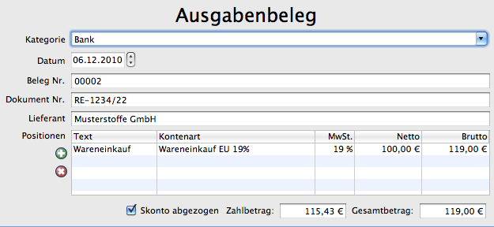

Alle Einahmen/Ausgaben können in Belegen erfasst und später tabellarisch und sortiert als OpenOffice Calc Tabelle exportiert werden.
Viele Felder des Beleges sind mit einer Autovervollständigung ausgestattet. Diese wird automatisch für das Feld abgeschaltet, sobald einmal der Wert korrigiert wurde.
Alle Belege werden normalerweise beim Export berücksichtigt. Soll ein Beleg nicht gebucht/exportiert werden, ist dieses Häckchen zu entfernen. Der Beleg erscheint dann nur noch beim Export des Kontostandes. Beispiel: 1000€ wird auf Konto A überwiesen.
Konto, auf das der Beleges gebucht wird. Zum Beispiel Bank, Kreditkarte, privat verauslagt. Eine neues Konto wird automatisch angelegt, wenn der Kontoname in die Auswahlliste eingetragen wird.
Datum des Beleges. Das Datum, an dem die Zahlung durchgeführt wurde.
Eigene Nummerierung der Belege.
Nummer des Beleges, z.B. die Rechnungsnummer.
Name des Lieferanten
Tabelle mit allen Positionen dieses Beleges. Der Mehrwertsteuersatz wird automatisch ausgewählt. Die Zuordnung Kontenart und Mehrwertsteuersatz wird gelernt und in die Liste Kontennummern eingetragen. Sie lässt sich nachträglich mit dem Editor Listeneintrag ändern
Fügt eine neue Zeile für eine neuen Position ein.
Löscht die ausgewählte Zeile/Position.
Wird dann angewählt, wenn der gezahlte Betrag nicht mit dem berechneten Gesamtbetrag übereinstimmt.
Der Betrag, der tatsächlich bezahlt wurde.
Aus den einzelnen Positionen berechneter Gesamtbetrag.